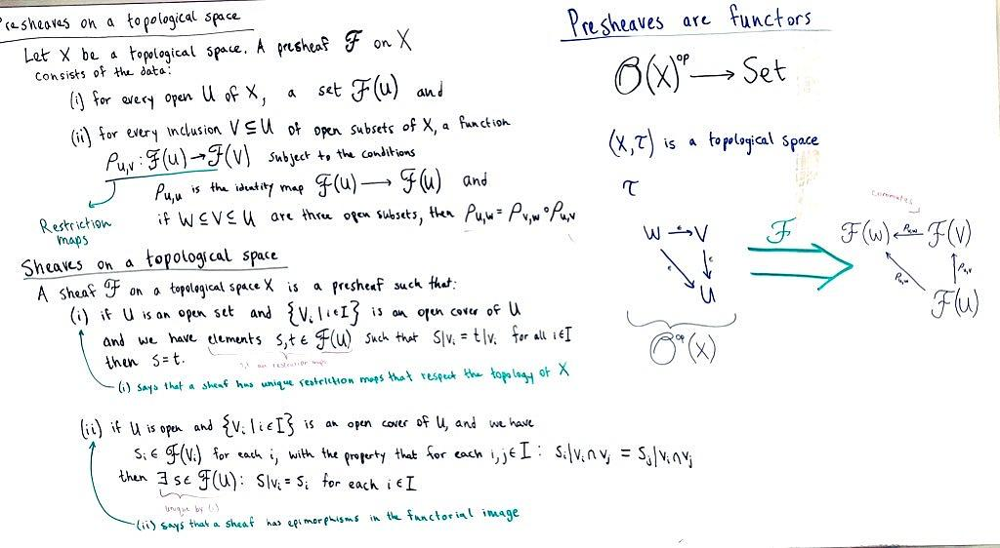

What's a topos? It's a kind of sheaf. What's a sheaf? It's a special kind of pre-sheaf. What's a pre-sheaf? It's a special kind of functor. What's a functor? It's an arrow-preserving mapping between categories. What's a category? A category \(C\) can be defined as a set \(\textbf{Ob}(C)\) of objects, such that for each pair of objects \(A,B \in \textbf{Ob}(C)\), there is a set \(\textbf{Hom}(A,B)\) called the "homset" that contains arrows \(A \to B\). To be a category, there have to be identity arrows for each object and the arrows have to compose associatively. More on category theory here if you are not familiar with them yet.
I read the definitions of pre-sheaves and sheaves to try and understand what they meant. Here's my whiteboard result:

sheaves.jpg134 KB Sheaves and pre-sheaves are functors (those big thick double green arrows \(\textcolor{green}{\mathscr{F}}\) ) To be a pre-sheaf, the restriction maps (arrows on the right side of the big thick green arrow) have to respect the topology of \(X\).
To be a sheaf, there has to be a uniqueness constraint on the restriction maps, and a constraint that the restriction maps \(\rho\) on the right side have to have an \(s\) that consistently reduces to it's restriction in \(V_i\) (I mistakenly wrote that it was an epimorphism constraint, but I got it backwards. Ignore that)
Examples of sheaves
the sheaf of continuous real-valued functions on a topological space
the sheaf of differentiable functions on a differentiable manifold
the sheaf of holomorphic functions on a complex manifold
the sheaf of sections of a fiber bundle (okay this one deserves it's own post, fiber bundlers are rad!)
This post just shares what I've read so far. I have a better idea of what a sheaf is, and why it was defined. But I haven't found Grothendieck yet. I'm still late for a very important date.